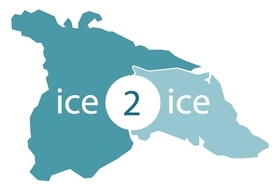

Projects
Below you can find a list of projects I have participated in as well as sublinks to further descriptions and pictures.

PREFACE
Combining European and African expertise in observations, modelling and marine ecosystems to improve our understanding and capabilities to predict Tropical Atlantic climate and its impacts.
My contribution was on field work on the M120 cruise from Recife, Brazil, to Walvis Bay, Namibia, Fall 2015.

ICE2ICE
How will the loss of Arctic sea ice impact the Greenland ice sheet?
Involved through the collaboration between the University of Copenhagen and University of Bergen.